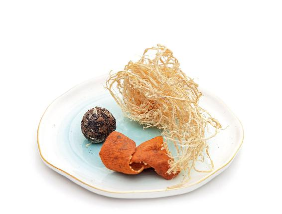
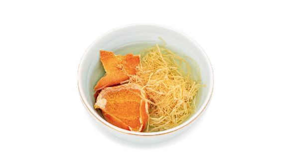
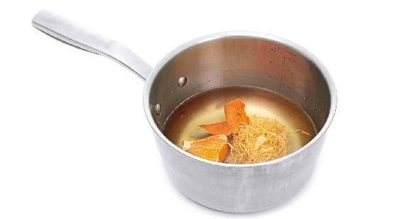
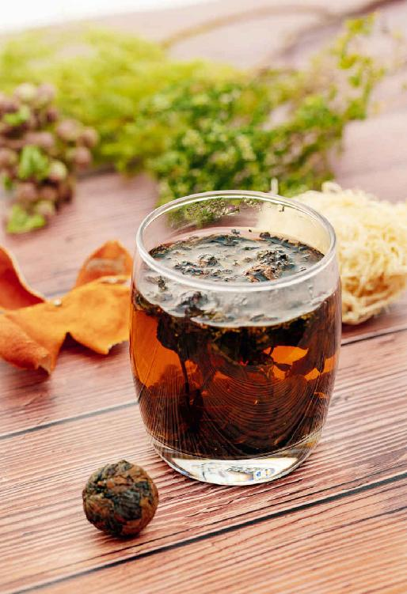

春天是容易上火的季节，而且火一般都发在人体的头、面等部位，比如，有的人是眼睛发红；有的人是鼻子上长痘；有的人是牙龈肿痛；有的人是一感冒就咽喉肿痛、扁桃腺肿大；有的人是头晕，而且有一种头昏脑涨、很烦热的感觉……这些都是头、面部上火的症状。
怎么办呢？我们可以用一款春季清火茶来提前防范。
我给大家推荐过一个我家的退热秘方“蚕沙竹茹陈皮水”，里面用到了三味材料——蚕沙、竹茹、陈皮，不知道您有没有囤积一些在家里，以备不时之需呢？很多朋友说，这些材料老存在家里好像平时用不上。
那春天这个时候您就可以把它们取出来了，您需要里面的两样材料：竹茹、陈皮。
散热排浊茶

原料：竹茹3克，陈皮半个，喜欢饮茶的人可以配白茶6克（或绿茶），有炎症时，可以配鱼腥草茶，竹茹、陈皮可以在药店买到，如果是切成丝的那种陈皮可以一次用10克左右。

做法：
1. 把竹茹、陈皮用水泡一下。

2. 冷水下锅，煮开后再煮10分钟左右关火。
3. 把汁滤出来，用它来冲泡白茶或鱼腥草茶。
允斌叮嘱：
1. 竹茹和陈皮可以多煮几次，反复冲泡白茶，这是一天的量。
2. 这款茶饮不是药，用量上是可以自己调整的，比如陈皮，如果您觉得自己需要多用，用一整个也是没关系的；白茶一般来说就是一泡的用量，6克左右，也可以根据自己的喜好来调整浓淡程度。
3. 竹茹的用量是3克左右，不要太多。从药店买的竹茹，是一团一团的，您取一小团就足够了。因为它非常轻，看起来觉得有一大把，但其实没有多少量。
4. 如果没有白茶，也可以用绿茶来代替，但白茶的清火效果更胜一筹。

读者评论：喝散热排浊茶后，牙龈不痛了
丁梅：我今天喝竹茹陈皮白茶，喝完牙龈不痛了，神奇的药茶方！
允斌解惑：口腔溃疡，可以喝散热排浊茶吗？
冯远芬：陈老师，我最近口腔溃疡，身体常常发热，好像上火了，这种情况可以天天喝竹茹陈皮白茶吗？
允斌：口腔溃疡是体内有湿气，喝的时候把竹茹减掉。另外，治疗口腔溃疡建议用吴茱萸足贴贴敷脚心。
这道茶饮很适合平时爱上火的朋友来喝，它的作用主要就是清火，而且专门清头部的火，也包括咽喉部位的火，在春天容易扁桃腺肿大的朋友可以提前喝这道茶饮。
有些年轻朋友可能大便干结、爱长痘痘，也可以喝这道茶。散热排浊茶还有化痰止咳的作用，如果您在冬天感冒发热之后留下一点咳嗽的尾巴，喝这道茶正合适。
内热重的人，包括往年夏天喝了姜枣茶以后感觉上火，现在不妨抓紧时机来喝一喝这道清火茶。
当人体内有热、有炎症、发热时，体内就像一个战场，竹茹可以帮我们扑灭“战火”，它可以清心火，凉血；清肝火，除烦；清胃火，止吐；清肺火，化痰。竹茹是一味平和的中药，对于孕妇和小婴儿都是安全的。
陈皮是保护脾胃的，而且它性温，和凉性的竹茹搭配在一起使这道茶饮更平和，并增强化痰止咳的效果。对冬季感冒咳嗽后没有及时调理好身体的人，能起到补救作用。
总结一下，如果您脾胃虚寒，就喝姜枣茶；如果您胃热很重、爱上火，可以喝清火茶；介于两者之间的，脾胃比较平和的朋友，如果又想清火又想在立夏之后给脾胃排毒的话，可以春天喝清火茶，到了立夏之后改喝姜枣茶。
总之，不管喝什么茶，都要根据自己的体质来选择。而且您可以喝一段时间之后，感受一下自己身体是不是舒服，觉得舒服的话，可以继续喝，不舒服的话就停掉。
养生和调理的饮食方子有很多，我们不需要拘泥在一个方子上，这个方子是给喜欢喝茶的朋友提供的。孕妇、小孩或者是不适合喝茶的人，也不用纠结是不是非要喝这一道清火茶，因为还有其他的方子可以用。
立春节气的排浊抗霾茶（鱼腥草）是可以一直喝的。如果您觉得之前喝得很舒服，不妨继续喝下去，因为之前霾天积存在人体内的毒，还需要一段时间才能排出去。
另外，霾严重地区的朋友也可以继续喝排浊抗霾茶。
霾属于阴浊，在春分之前，阴气比阳气重，这时候我们要注意抗霾。过了春分——三月中旬之后，霾就会渐渐地减弱了，人体气血的通道已经非常畅通，排毒的速度也比平时要快，这时候，您就可以改喝其他茶饮了。